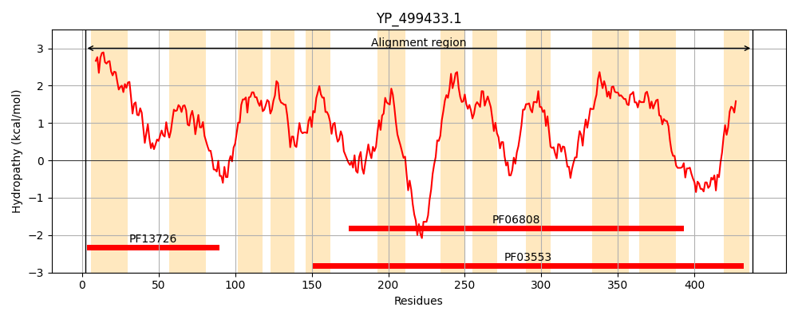
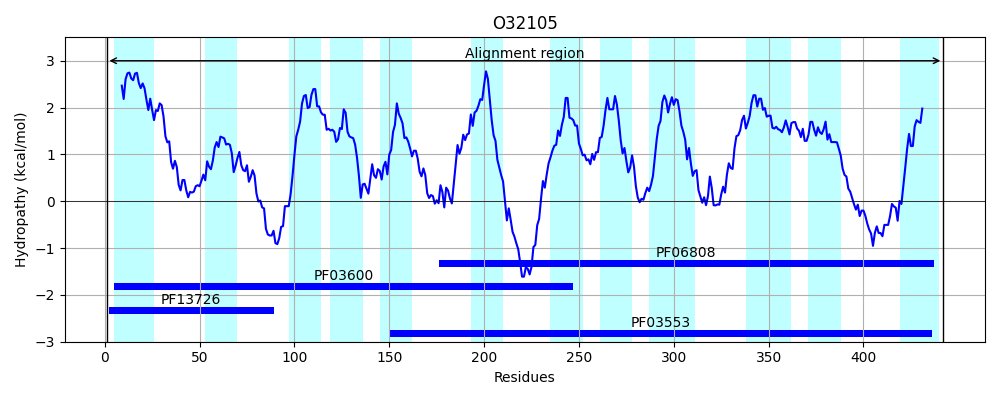
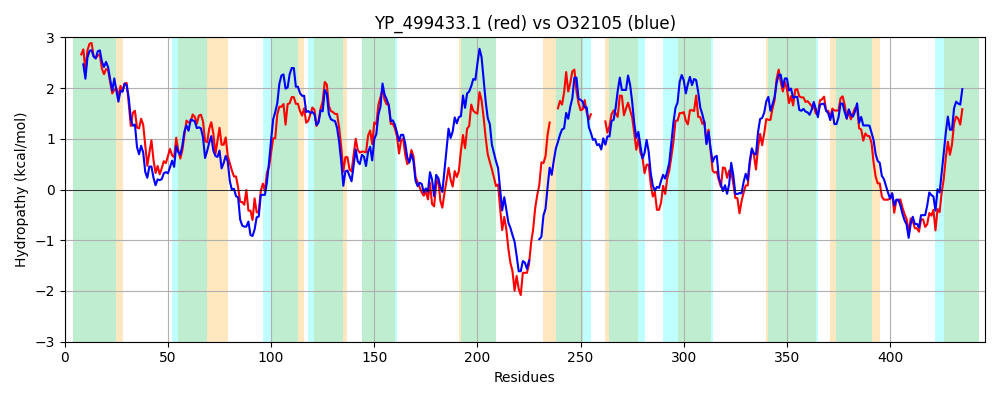

Hit Accession: O32105
Hit TCID: 2.A.8.1.12
Hit Description: gnl|BL_ORD_ID|7087 gnl|TC-DB|O32105|2.A.8.1.12 Putative amino acid transporter yuiF OS=Bacillus subtilis GN=yuiF PE=4 SV=1
Mach Len: 446
e:0.000000
Query TMS Count : 12
Hit TMS Count: 12
TMS-Overlap Score: 9.800000
Predicted Substrates:CHEBI:5733;histidine
BLAST Alignment:
Score: 1068 , Bit scores: 416 bits, E-value: 2.9e-143, Alignment length: 446, Percentage identity: 48
Query: 2 INAVVIAVILMIVLCLCRLNVVISLFISALVGGLISGMSIEKVINVFGKNIVDGAEVALSYALLGGFAALISYSGITDYLVGKIINAIHAENSRWSRVKVKVTIIIALLAMSIMSQNLIPVHIAFIPIVIPPLLSLFNDLKIDRRLIGLIIGFGLCFPYVLLPYGFGQIFQQIIQSGFAKANHPIEFNMIWKAMLIPSMGYIVGLLIGLYVYRKPREYETRKISDSDNVTELKPYI---LIVTIVAILATFLVQTF------TDSMIFGALAGVLVFFISRAYNWYELDAKFVEGIKIMAYIGVVILTANGFAGVMNATGDIDELVKTLTSITGDNKLFSIIMMYVIGLIVTLGIGSSFATIPIIASLFIPFGASIGLDTMALIALIGTASALGDSGSPASDSTLGPTAGLNVDGQHDHIRDTCVPNFLFYNIPLMIFGTIAAMVL 438
+NAVVIAV+LM+VL L R+N+VI+L I AL GGL G+ + + + F + A VA+SYA+LG FAA ++ +G+ D +V + I + + KV I++ +L +S SQN++PVHIAFIP++IPPLL +FN+L++DRRLI +I FGL PY+LLP GFGQIFQ +++ A A + I A++IP G +VGL++ + VYRKP++YET+ IS + E PY + + ++AI+ + VQ + + MI GALAG++V F+S E D+ +G+ +MA+IG V+L A GF+ V+ TGD++ LVKT G ++ ++M ++GL++T+GIGSSFATIP+I ++F+P +G MA IA+IG A+ALGD+GSPASDSTLGPT+GL+ DGQH HI DTCVP F+FYNIPL+IFG IAA+VL
Sbjct: 1 MNAVVIAVLLMLVLSLLRVNIVIALIIGALAGGLTGGLGLGETVKAFTDGLGGNATVAVSYAMLGAFAAALTKTGLPDAMVEASVKLIGNKEDSRKKALSKVLIVLIILIVSCFSQNVVPVHIAFIPVLIPPLLKIFNELEMDRRLIACVITFGLTAPYILLPVGFGQIFQGMLKDNMADAGLNVPLADIPYALIIPVAGMVVGLILSVIVYRKPKQYETKDISGA----EASPYTRKSIGIAVLAIVVSLGVQLYLSQTLGVEGMIMGALAGLIVLFVSGVMKRDEADSLITDGMVLMAFIGFVMLVAAGFSNVLTKTGDVESLVKTSAGFIGHSQSLGALLMLIVGLLITMGIGSSFATIPVITTIFVPLCMQLGFSPMATIAIIGAAAALGDAGSPASDSTLGPTSGLSADGQHHHIWDTCVPTFIFYNIPLVIFGWIAALVL 442 | Protein Hydropathy Plots: |
|---|
|  |  |
Pairwise Alignment-Hydropathy Plot:
|
|---|
|  |